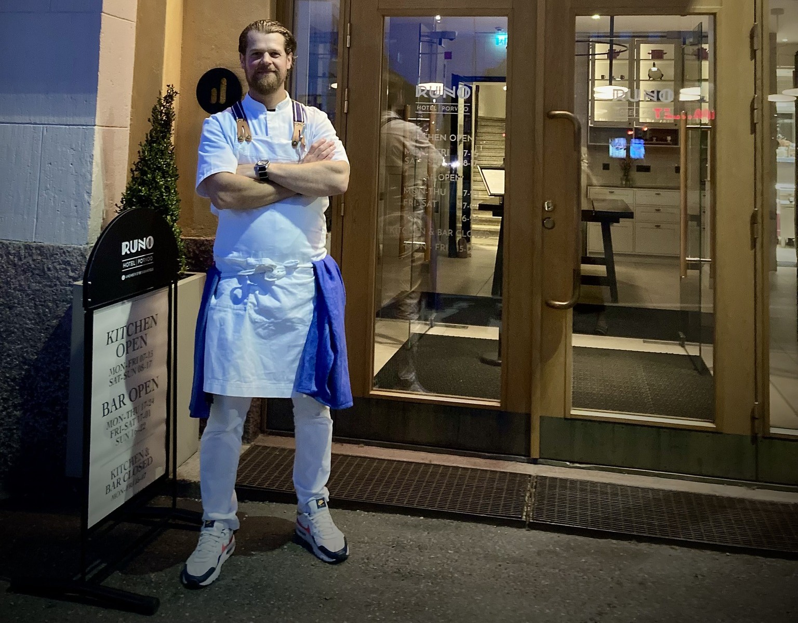

Welcome to Nordic Taste Trail, where culinary excellence meets unforgettable experiences.
Founded in 2020 by our award-winning chef, Mark Kumlin, our catering company brings over two decades of expertise and passion to every dish we create.
Our chef's journey began in 2000, honing his skills in kitchens across the globe. Over the years, he has had the honor of preparing meals for presidents,
royalty, and internationally renowned artists. His dedication to quality and innovation has made him a sought-after culinary artist on the world stage.
Based in the charming city of Porvoo, Finland, we combine Nordic flavors with global inspirations to craft bespoke menus tailored to your event.
From intimate gatherings to grand celebrations, our team ensures each bite tells a story of excellence and care.
Let us elevate your special occasion with food that delights the palate and leaves a lasting impression.
At Nordic Taste Trail, we don’t just serve meals—we create memories.
Return to Main Page